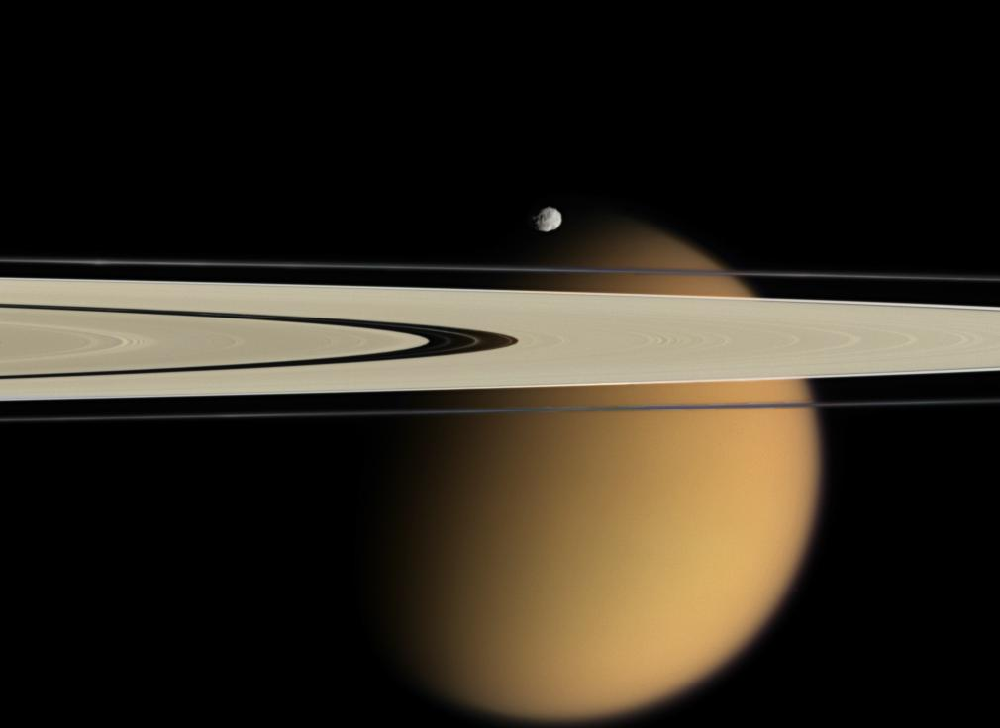
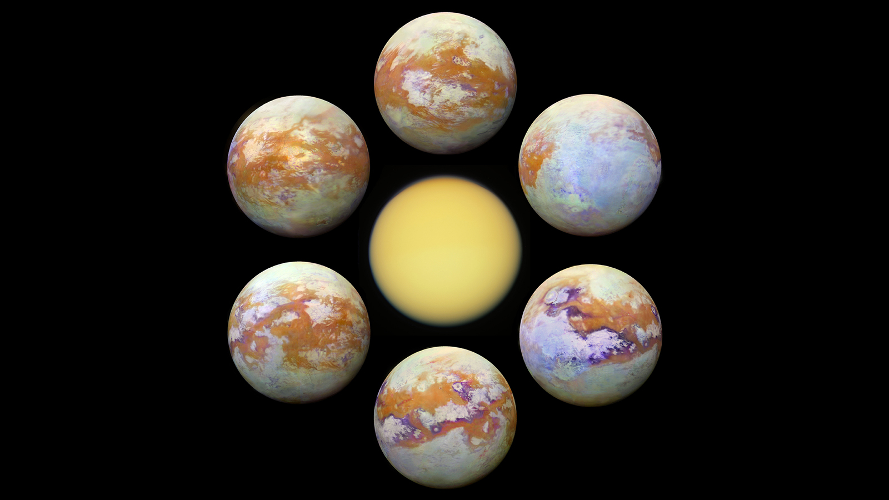
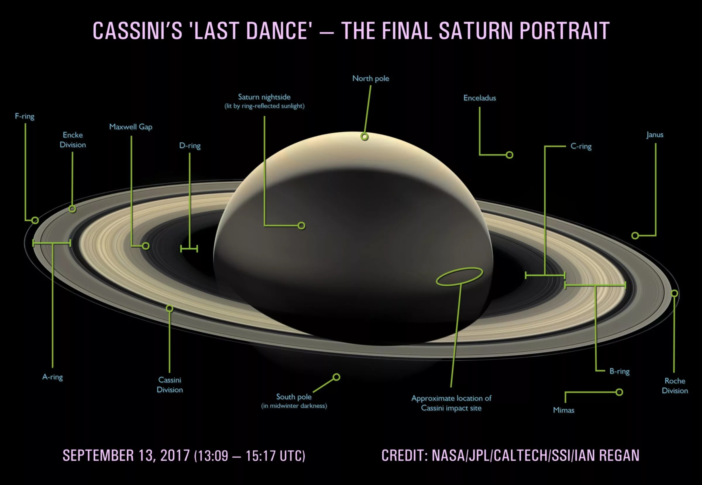

Figure 1: “Titan Beyond the Rings”, Image credit: Cassini Imaging Team, ISS, JPL, ESA, NASA (Nemiroff and Bonnell, 2014)
Ever wondered about how the view could be near one of the most visually distinct planets of our solar system? NASA’s astronomy picture of the day (APOD) captures these scenes, and one such example is the APOD for November 2, 2014. Titled “Titan Beyond the Rings”, the image features 3 elements: Saturn’s Rings, Epimetheus and Titan. For some brief observation, we can see many variations in the stretched out look of Saturn’s Rings, along with a mysteriously blurry Titan beyond. Some more information is that this intriguing image was captured by the robotic spacecraft Cassini-Huygens, during its Mission to Saturn where the purpose was to study Saturn’s interesting arrangement of rings and moons in depth (Nemiroff and Bonnell, 2014).
Epimetheus in comparison to Titan in the image truly shows the scale titan has with other celestial bodies. Titan being the second largest moon in the Solar System and Saturn’s largest moon (Jackson, 2026), many interesting properties can be found on the surface and workings of this moon that we’ll mention in later topics.
Spoiler Alert: Titan’s atmosphere is responsible! Infrared can be a tool to “see” details of Titan, continue reading for more information.
You might be thinking it’s because of the cameras on Cassini not being able to capture the features of a celestial object like Titan. Cassini actually was equipped with a COMPOSITE INFRARED SPECTROMETER, a ULTRAVIOLET IMAGING SPECTROGRAPH, UVIS INSTRUMENT COMPONENTS, a VISIBLE AND INFRARED MAPPING SPECTROMETER, VIMS INSTRUMENTS COMPONENTS and more (ESA Science & Technology - instruments, 2019). These instruments can be used to smoothly combine data from the multiple different observations, that then form a cohesive picture of our celestial body to further research (NASA, 2018). Hence, the cameras on Cassini are not the cause of the hazy looking Titan, but actually the reason why we can see the different features of Titan for observation of its landscape and interior as we’ll find out.

Figure 2: “Titan as it appears in visible light” (NASA, 2018)
In the image above, six different angles of Titans are captured by combining the data received from Visual and Infrared Mapping Spectrometer (VIMS) instruments and without any seams for a clear finish to analyse. The center Titan is similar to the visuals of “Titan Beyond the Rings” as it has no discernible features, so its clear next to each other, the Infrared cameras aboard Cassini were a major part of getting to analyse Titan (NASA, 2018).
Titan’s surface is complex, with a myriad of geologic features and compositional units which were observed at a much higher resolution thanks to the VIMS instrument. The way this was done was three color channels: red, green and blue. These were then combined in a specific ratio for the surface at two wavelengths, also known as “band-ratio”, to reduce seams and emphasise surface variations. Dunes on the equator appear consistently brown; bluish and purplish areas also may have different compositions from the other bright areas. The subtle spectral variations can lead to much more in depth analysis of the geography and composition of Titan and gleam more information that could be important for us to learn of. The geological features like channels on the surface and mountainous ranges are far more informative than to only observe with visible light to human eyes (NASA, 2018).
Titan is actually a moon (not a planet) with its own dense atmosphere! It is composed of 95% molecular nitrogen, argon, methane, ethane, and other hydrogen compounds (Jackson, 2026). Small particles called aerosols are also in Titan’s upper atmosphere which strongly scatter visible light; observing Infrared helps as those wavelengths have much weaker scattering and absorption of light (NASA, 2018). The VIMS instrument truly was sensational in capturing the beautiful spectral variations of Titan’s surface, and ‘lifting’ the haze for clearer observation.
With new research, it was found that the hazy atmospheric chemistry of Titan could be what Earth’s was like eons before our time. Using the Cosmic Simulation Chamber for pulsed plasma discharge to mimic electron bombardment, researchers produced a nitrogen and methane mixture “tholins”. These were similar to Titan’s aerosols found in the upper atmosphere. Acetylene was added, which would be a precursor to benzene which is found in Titan’s atmosphere, to probe later reaction steps. X-ray spectroscopy at the Advanced Light Source showed that just 0.5% acetylene doubled the carbon-to-nitrogen ratio in the products, revealing how strongly initial precursors shape nitrogen chemistry (Tamura, 2022). The initial precursors will be important in researching further on Titan and especially its uniquely dense atmosphere in our Solar System.
Titan is an interesting case for an APOD with its many interesting characteristics that speak to similar features on Earth: a thick atmosphere, methane and ethane rain, and a potential to harbour liquid solvent. The composition of both Titan and Earth’s atmospheres also contain a lot of nitrogen. A Huygens probe also captured scenery of Titan, like channels and mountainous ranges not too unlike Earth’s geological features (Jackson, 2026).
The methane cycle of Titan’s weather is also something that resembles Earth’s water cycle, though the material compositions are far different to Earth’s water. Titan’s landscape also has an enigmatic formation of dunes on the equator that have stayed active for many years, even though the sediments are likely soft hydrocarbon grains that are very weak materials. A proposed explanation is seasonal sediment transport on hypothetical sedimentary pathways on Titan, with that abrasion during transport by winds or methane rivers and sintering of grains.Titan’s sedimentary cycle that can explain the latitudinal distribution of landscapes through abrasion and grains sintering driven by Titan’s seasons, which is not too dissimilar to Earth’s sedimentary cycle (Lapôtre, Malaska, and Cable, 2022).
When looking at the differences between Titan and Earth, we look closer into seeing its failings for harbouring life. There is little elemental diversity in the environment, a low temperature for solubility, a non-polar nature of methane and ethane for solubility and limited diversity in some molecules. This can all lead to poorer likelihood for growth of life, as the basics of liquid solvent will not be as comfortable for synthesising life as what Earth’s environment was like (McKay, 2016). Titan may also lack a process for outgassing; Earth has volcanoes that replenish lost chemicals for this process, but looking at the proportion of methane in Titan’s atmosphere even after around 30 million years of time to dissipate, it hasn't (Jackson, 2026).
New research has also shown Titan’s interior is different from what was inferred from previous analyses. The malleability of Titan was thought to be a symptom of vast liquid solvent inside the moon, but further studies suggest this is only in the form of pockets of meltwater. While there is still a chance for harbouring life, the lack of a global ocean may vastly set back this likelihood (Carney, 2025).
More observations and simulations of Titan’s atmosphere can contribute to future activities to discovering information about our Solar System, ranging from telescopic measurements to NASA’s 2027 Dragonfly mission (Tamura, 2022). Landing on Titan in another investigation can tell us even more about the similarities and differences between it and our home planet.

Figure 3: “CASSINI'S 'LAST DANCE': A FINAL PORTRAIT AT SATURN (ANNOTATED)”, Image credit: NASA / JPL-Caltech / SSI / Ian Regan (Regan, 2017)
In the image above you can see the painstaking work of Cassini before it plummeted into Saturn’s atmosphere, along with annotations for easier differentiation for the many pieces of Saturn’s rings. For four hours using the wide-angle camera (WAC) it obtained ten “footprints” of Saturn’s view. In these images there were red, blue, green shots that were then filtered, as well as long and short exposures. Scientists captured detail in the bright rings, sunlit crescent, and the nightside of the planet (Regan, 2017).
Saturn is an extremely interesting planet in our solar system, speaking lightly. It is one that has complex rings and hundreds of moons with a variety of characteristics. The rings are labelled from A to G, and are commonly theorised to have been pieces of comets, asteroids, or shattered moons that now orbit Saturn as ice, rock and dust (NASA 2024). In “Titan Beyond the Rings” the stretched view of Saturn’s rings interestingly displays a few visible parts: the F ring, A ring, and the dark space in the A ring which is named the Encke Gap. Encke Gap isn’t empty as well, several thin knotted ringlets and small moons like Pan orbit there (Nemiroff and Bonnell, 2014), which affects the look of the rings due to gravity pulling on debris and making the particles “bunch up” (Jackson, 2026).
New research shows the data Cassini collected points to Saturn’s rings being even further above and below the regular ring orbit. Particles reached three Saturnian radii above and below, and these mineral dust grains were of near identical composition. With the amounts of high magnesium and calcium and low concentration of other material compositions such as iron, it was reasonable to say the dust “halo” was originally a part of the main ring. The question is how this “halo” was formed from ejections out and away from the rings. The likely explanation is that particles within the rings were struck by lots of micrometeoroids, which is reasoned with detailed simulations created by the researchers with a focus on compositional analysis of hundreds of thousands of icy dust grains (Linti, 2025).